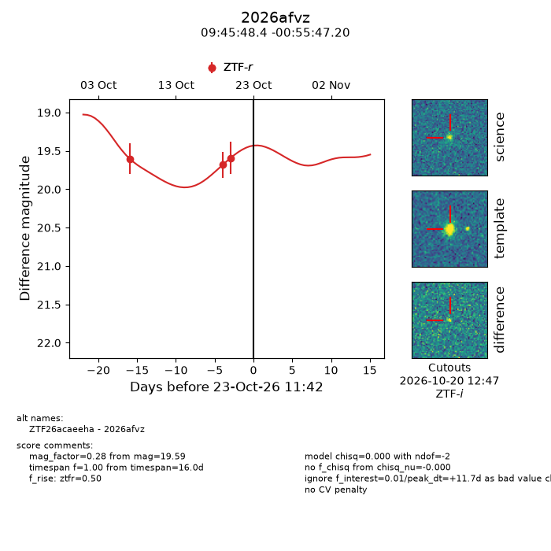
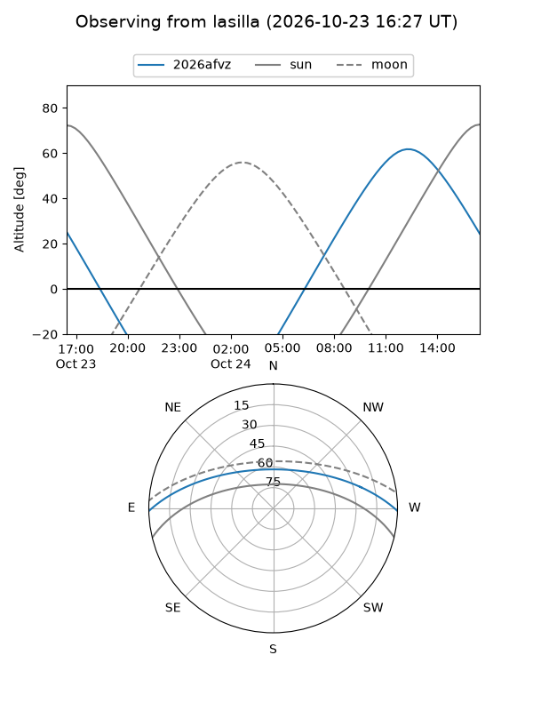
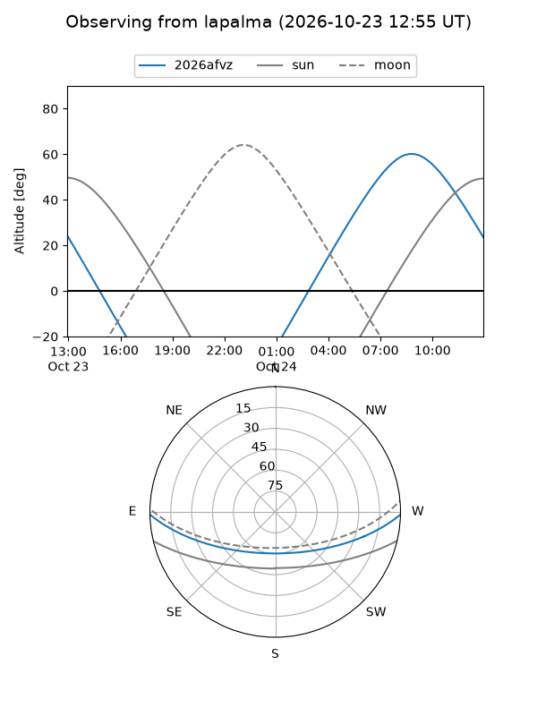
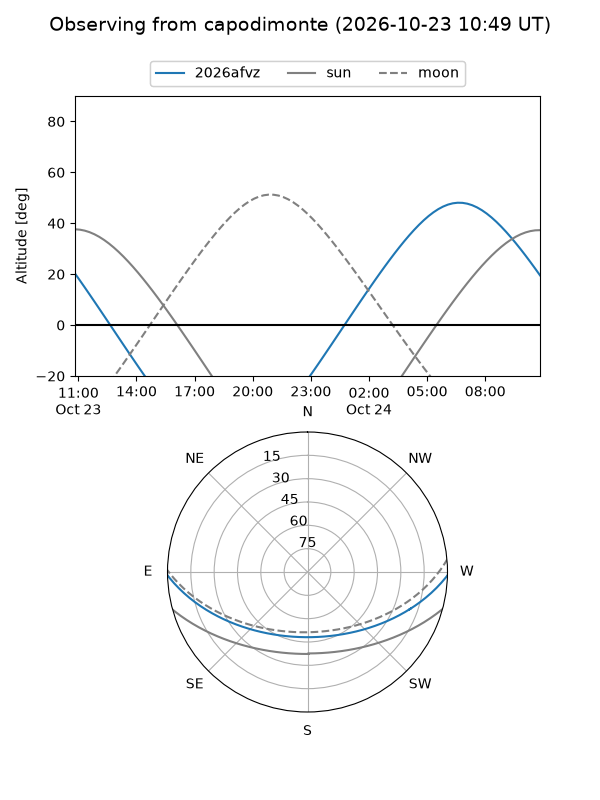
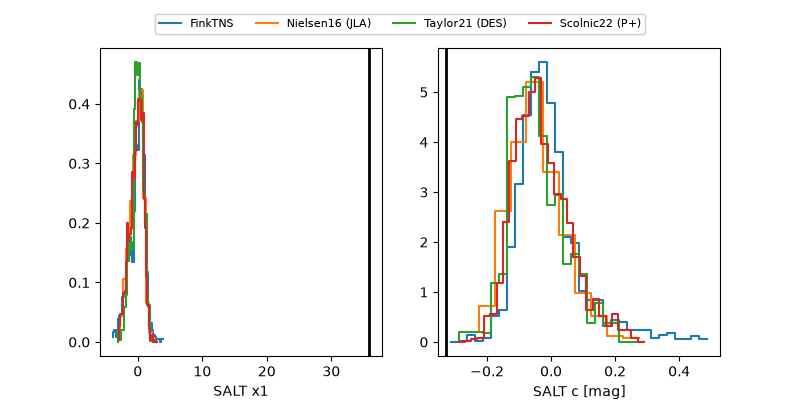

2026afvz
Target 2026afvz at 2026-10-23 11:44
Aliases and brokers:
FINK-ZTF: ztf.fink-portal.org/ZTF26acaeeha
Lasair-ZTF: lasair-ztf.lsst.ac.uk/objects/ZTF26acaeeha
ALeRCE-ZTF: alerce.online/object/ZTF26acaeeha
YSE-PZ: ziggy.ucolick.org/yse/transient_detail/2026afvz
TNS name: wis-tns.org/object/2026afvz
Direct TNS query: direct search
alt names
ZTF26acaeeha (ztf,fink_ztf)
2026afvz (tns,yse)
Coordinates:
equatorial (ra, dec) = 146.4518,-0.92978
equatorial (HMS+DMS) = 09:45:48.43,-00:55:47.20
galactic (l, b) = (237.3525,+37.31428)
Flags:
peak dt: +11.7
Photometry:
last ztfr=19.59
3 ztfr detections
Lightcurve

Visibility



Additional plots
